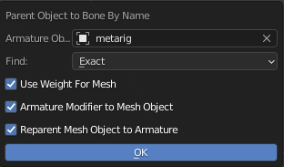

Parent Object to Bone by Name
Object |
This Operator Parent or Apply Weight Objects to an Armature Bones Base by matching the object name and Bone Names
General Options
Armature Object: The Armature Object to Match the Selected Objects Name to Parent to
Find:
Exact: Match the name only if the name are exact
Include: Match the name if the object name is include in bone name
Use Weight For Mesh:
Create Vertex Group for the Object instead of Parent to Bone if the object type is Mesh
Armature Modifier to Mesh Object: Create Armature Modifier for the Object if the object type is Mesh
Reparent Mesh Object To Armature: Parent Mesh Object to the Armature